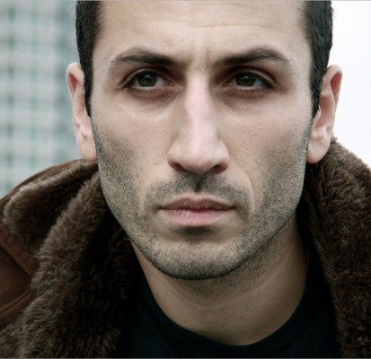

#7017 Die Mumie
Alternativ: The Mummy


 IMDB-Wertung: 5.5 / 10
IMDB-Wertung: 5.5 / 10  Metascore: 34
Metascore: 34 
Vor 2.000 Jahren wurde Ahmanet tief unter der Erde weggesperrt – aus gutem Grund! Denn wie Expertin Jenny Halsey aus Hieroglyphen entziffert, war Ahmanet als Anwärterin auf den Königsthron zu machtgierig und böse. Durch Mumifizierung und eine meterdicke Sandschicht sollte die Welt vor der Macht der Geschassten geschützt werden, doch nun ist die Mumie erwacht. Ahmanet bahnt sich den Weg aus ihrem düsteren Grab hinein in unsere Gegenwart, in der es am Abenteurer Nick Morton ist, Unheil von der gesamten Menschheit fernzuhalten. Die Tipps von Dr. Henry Jekyll im Ohr nimmt Nick den Kampf auf. Über die Jahrhunderte hinweg hat sich in der Mumie unermessliche Wut und Bosheit angestaut – jetzt hat sie Durst nach Rache…
Jahr: 2017
Dauer: 110 Minuten
FSK: 12
Land: USA Studio: Universal PicturesTonspuren: DD5.1 - ,
Untertitel: Deutsch, Englisch,
Auflösung: 1080p (1920x800) Größe: 8929 MB
Genre: Action, Thriller, Abenteuer, Fantasy
Regisseur: Alex Kurtzman
Drehbuch: David Koepp
Soundtrack:
Darsteller:
 Tom Cruise als Nick Morton
Tom Cruise als Nick Morton Russell Crowe als Henry Jekyll
Russell Crowe als Henry Jekyll Annabelle Wallis als Jenny Halsey
Annabelle Wallis als Jenny Halsey- Sofia Boutella als Ahmanet
 Jake Johnson als Chris Vail
Jake Johnson als Chris Vail Courtney B. Vance als Colonel Greenway
Courtney B. Vance als Colonel Greenway Marwan Kenzari als Malik
Marwan Kenzari als Malik- Stephen Thompson als First Man
- James Arama als Second Man
- Matthew Wilkas als Reporter
- Sohm Kapila als Reporter
 Sean Cameron Michael als Archaeologist
Sean Cameron Michael als Archaeologist- Rez Kempton als Construction Manager
 Selva Rasalingam als King Menehptre
Selva Rasalingam als King Menehptre Javier Botet als Set
Javier Botet als Set Hadrian Howard als MP
Hadrian Howard als MP Dylan Smith als Pilot
Dylan Smith als Pilot Parker Sawyers als Co-Pilot
Parker Sawyers als Co-Pilot Neil Maskell als Dr. Whemple
Neil Maskell als Dr. Whemple Andrew Brooke als Mr. Brooke, Emergency Worker
Andrew Brooke als Mr. Brooke, Emergency Worker- Hannah Ankrah als Woman in Toilet
 Dylan Kussman als Writer Tech
Dylan Kussman als Writer Tech- Peter Lofsgard als Spider Technician
 Shane Zaza als Technician
Shane Zaza als Technician- Bella Ava Georgiou als Technician
- Alice Hewkin als Technician
- Vera Chok als Prodigium Tech
- Martin Bishop als Senior Technician
 Daniel Tuite als Prodigium Technician
Daniel Tuite als Prodigium Technician- Noof McEwan als Technician in Chamber
- David Burnett als Tunnel Agent
- Sonya Cullingford als Undead
- Kim Adis als Museum Visitor , uncredited
- Mouna Albakry als Museum Visitor , uncredited
 Chasty Ballesteros als Kira Lee , uncredited
Chasty Ballesteros als Kira Lee , uncredited- Kelly Burke als Museum Visitor , uncredited
 Ross Carter als Passerby , uncredited
Ross Carter als Passerby , uncredited Nick Donald als Construction Worker , uncredited
Nick Donald als Construction Worker , uncredited-  George Georgiou als Temple Priest , uncredited
 Michael Haydon als Tourist , uncredited
Michael Haydon als Tourist , uncredited- Nasir Jama als Egyptian Slave , uncredited
- Joost Janssen als American Soldier , uncredited
- Solomon Taiwo Justified als Tourist , uncredited
- Sophie Karl als French Tourist , uncredited
- Christian Knight als Tourist , uncredited
 Jorge Leon Martinez als Technician , uncredited
Jorge Leon Martinez als Technician , uncredited- Jason Matthewson als Museum Guy , uncredited
- Raid Matwi als Crossrail Worker , uncredited
 Shina Shihoko Nagai als Museum Tourist , uncredited
Shina Shihoko Nagai als Museum Tourist , uncredited Alaa Safi als Sickle Slave , uncredited
Alaa Safi als Sickle Slave , uncredited
Datei: X:\5-Pentalogie(A-Z)\Mumie\Mumie, Die (2017, FSK12, 1920x800).mkv seit 17.09.2017
Festplatte: HD Collection-3(N-Z)-6(A-Z)
 Es gibt insgesamt 9 Filme in der Gruppe '5-Pentalogie(A-Z)\Mumie'
Es gibt insgesamt 9 Filme in der Gruppe '5-Pentalogie(A-Z)\Mumie'